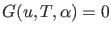
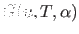

The Period Doubling bifurcation curve is defined by the following system
this is exactly the system defining limit cycles but with one extra constraint
 where  is defined as the solution component  of the system
of the system
 |
|
|
(65) |
which is exactly the same system as was used to detect the Period Doubling bifurcation.
Instead of using this functional both systems can be combined in one larger system
The first method (using system (64) and (65)) is implemented in the curve definition file perioddoubling.
The other method is implemented in perioddoubling2. We will not use it further and it should not be confused with the
continuation of the period doubled curve that branches off in a PD point on a limit cycle curve.